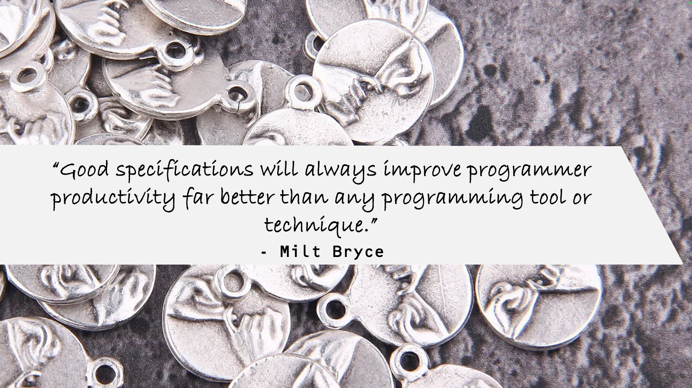
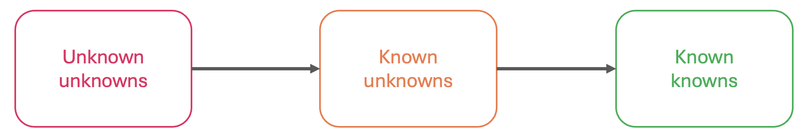

Behavior-Driven Development for API Delivery
(11) Behaviour-Driven Development (BDD) Workflow
(12) Rich Ecosystem of API Specifications

(13) BDD for API Delivery with API Specifications
(14) The Power of API Specifications
Example Mapping
(16) Example Mapping for Deliberate Discovery
- Effectively explore and refine detailed acceptance criteria, so that:
- Agreed scope
- Identified as much uncertainty as possible
- Agreed on the readiness for design/development
- Identified concrete examples
(17) Example Mapping for Deliberate Discovery
- Effectively explore and refine detailed acceptance criteria, so that:
- Agreed scope
- Identified as much uncertainty as possible
- Agreed on the readiness for design/development
- Identified concrete examples

(18) What do you need for Example Mapping?
(19) Who Should Participate?
(20) Who Should Participate for API User Stories?
Example Mapping in Action
(22) Example Mapping in Action
(23) Example Mapping in Action - Search for Pets
(24) Example Mapping: Search for Pets
(25) Example Mapping: Search for Pets
(26) Example Mapping: Search for Pets
(27) Example Mapping: Search for Pets
(28) Example Mapping: Search for Pets
(29) Example Mapping: Search for Pets
(30) Example Mapping: Search for Pets
(31) Example Mapping: Search for Pets
(32) Example Mapping: Search for Pets
(33) Example Mapping: Add New Pet
(34) Example Mapping: Adopt Pet
(35) Example Mapping: Get Adoptions List